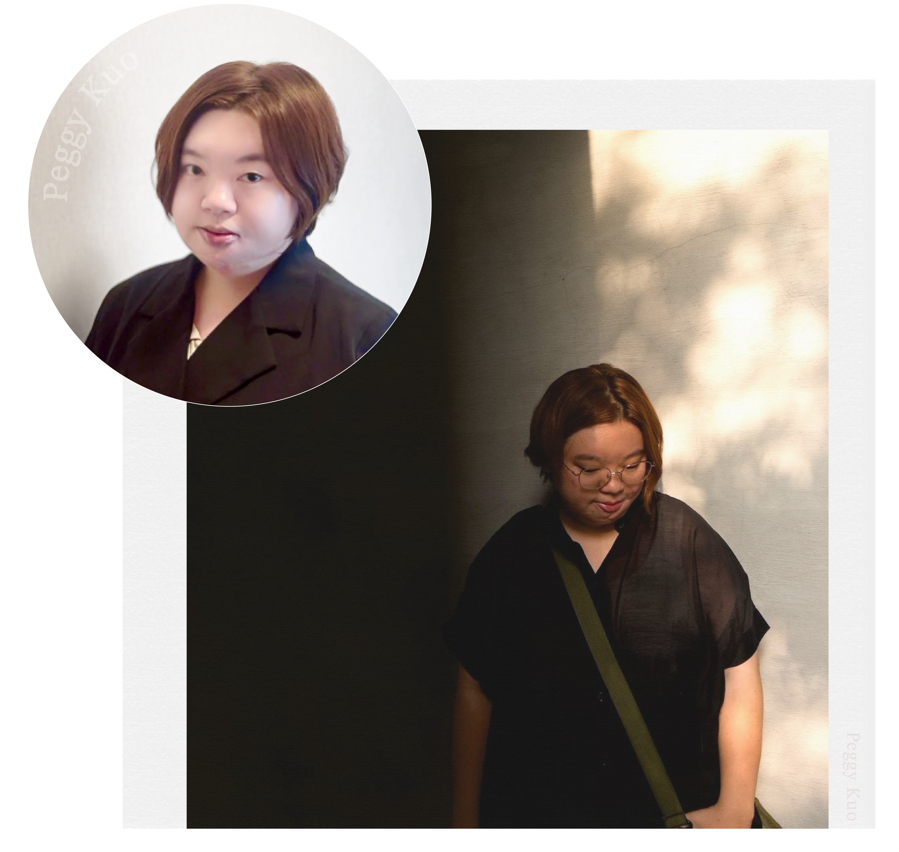

網頁美編
01
BRAND & E-COMMERCE
陌生益所
電商平台 · 視覺企劃與流程工具開發

專注於視覺排版與資訊設計。
擅長將複雜資訊轉化為易讀的視覺介面，曾執行平面書籍到數位電商品牌。
設計軟體：Illustrator · Photoshop · InDesign · Procreate · Canva
AI協作工具：Google Antigravity, Cursor, Gemini, Chat gpt
前端網頁基礎：RWD 響應式網頁設計, HTML/CSS